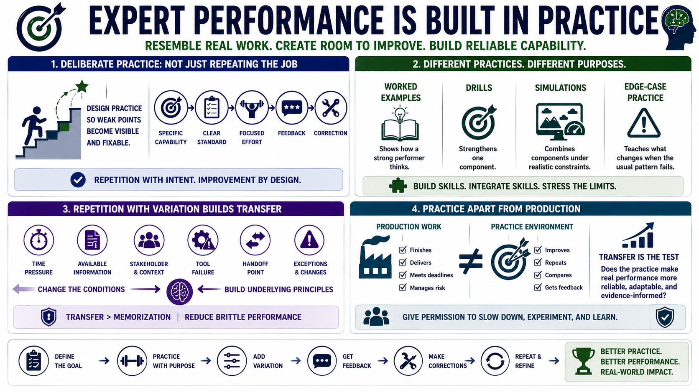

Practice Design for Expert Performance
Connecting to LMS... Progress: in progress

Narration
Expert performance is built through practice that resembles the demands of real work while still creating room for improvement. Deliberate practice starts with a specific capability, a clear standard, focused effort, feedback, and correction. It is not just doing the job again and again. It is designing repetition so weak points become visible and fixable.
Scenario training, simulations, rehearsal, drills, worked examples, and edge-case practice all serve different purposes. A worked example shows how a strong performer thinks. A drill strengthens one component. A simulation combines components under realistic constraints. Edge-case practice teaches the performer what changes when the usual pattern is incomplete, misleading, or missing.
Repetition with variation is important. Exact repetition can build fluency, but variation supports transfer. Change the time pressure, available information, stakeholder, tool failure, handoff point, or exception. The learner must recognize the underlying principle instead of memorizing one scenario. This helps reduce brittle performance that only works in a familiar example.
Practice should be separated from production when possible. Production work rewards finishing. Practice rewards improving. A good practice system gives people permission to slow down, repeat, compare, and receive feedback before returning to live work. The final test is transfer: does the practice make real performance more reliable, adaptable, and evidence-informed?